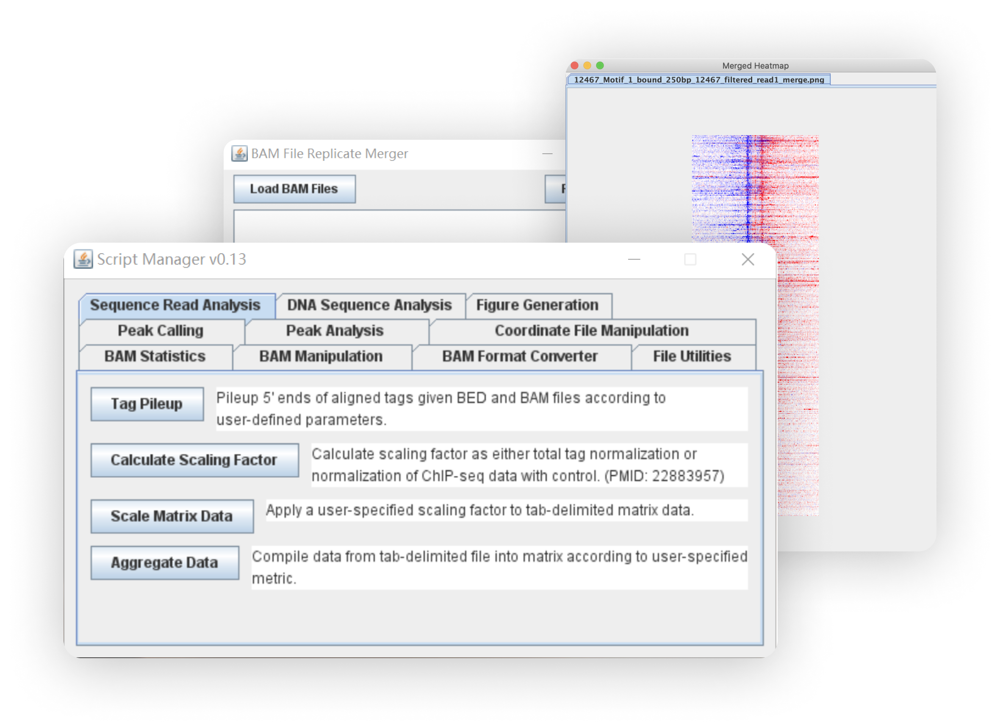

Research Interests
Mechanisms of transcription initiation

Transcription of RNA initiates at transcription start sites (TSS) but different transcription start site profiling assays will consistently identify conflicting TSS annotations which implies different populations of RNA initiate at different sites. Given that TSS selection determines the 5’ UTR and the importance of UTRs in downstream posttranscriptional regulation of expression, I am interested in the kinetics around TSS selection and how a cell can drive initiation at certain TSSs over others.
ScriptManager
ScriptManager is a generalized collection of scripts for analyzing genomic datasets (perfect for non-bioinformaticians) for a broad variety of biochemical sequencing assays.
ScriptManager WebsiteGenoPipe

GenoPipe is a quality control tool for analyzing NGS datasets for three different types of genetic backgrounds for a quick post-sequencing check that the strain background of the sample matches the expectation.
GenoPipe Website